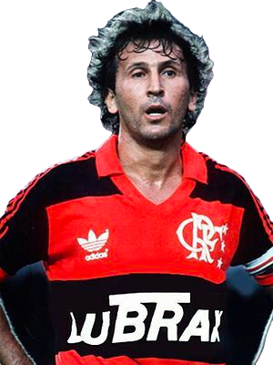
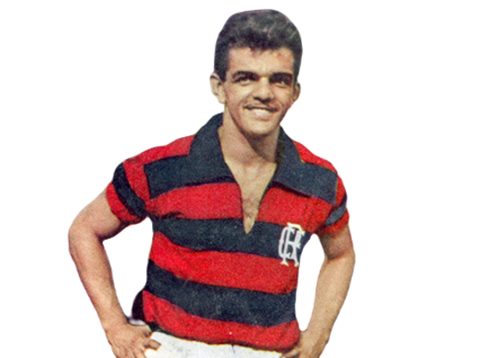
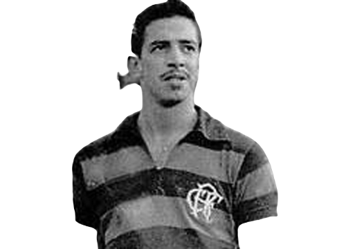

-
Zico
Flamengo: 1971 A 1983
Descrição
Nascido em Quintino, o jovem Arthur começou sua trajetória no esporte jogando futsal pelo Juventude, equipe tradicional do bairro so subúrbio carioca. história dele no Flamengo começou aos 14 anos de idade.Ao chegar ao Flamengo, Zico ganhou outra alcunha: “Galinho”, por causa do seu físico franzino
-
Dida
Flamengo: 1954 A 1963
Descrição
Edvaldo Alves de Santa Rosa, mais conhecido como Dida, completaria 87 anos de idade nesta sexta-feira, dia 26, se estivesse vivo. Dida é o segundo maior artilheiro da história do Flamengo, com 264 gols em 357 jogos, ficando atrás apenas do maior ídolo da história do clube da Gávea, Zico.
-
Henrique Frade
Flamengo: 1954 A 1963
Descrição
Henrique Frade é o 3º maior artilheiro da história do Flamengo. Só Zico e Dida fizeram mais gols com a camisa rubro-negra do que ele. E a propósito, embora tenha jogado num intervalo de anos no qual o clube conquistou poucos títulos, o que com certeza faz com que seu nome não seja lembrado com mais força na galeria de maiores jogadores a terem atuado em vermelho e preto em todos os tempos, foram anos em que a dupla Henrique e Dida, usando respectivamente as camisas 9 e 10, jogaram num nível altíssimo, pois os dois atuavam juntos, e estão entre os três em toda a história a terem feitos mais gols, só Zico balançou as redes mais do que esta dupla usando o Manto Sagrado.